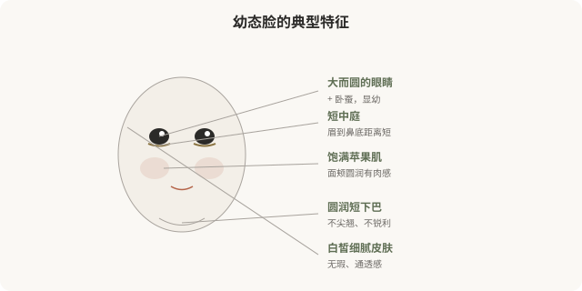
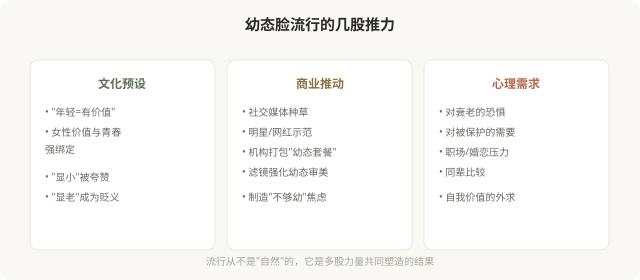

先说结论：幼态脸（baby face）是近年最流行的医美亚美学之一，以圆润、饱满、幼态化的面部特征为美，大而圆的眼睛、短中庭、饱满苹果肌、圆润下巴、皮肤白皙细腻。它可以通过双眼皮、卧蚕、填充、皮肤管理等医美手段部分实现。但幼态脸的流行不只有审美原因，它还暗含“年轻=有价值”“幼态=被保护”的文化预设，并且正在让大量女性趋同成同一张脸。追求它之前，值得看清它在追什么。
幼态脸的视觉特征

幼态脸的核心是“保留婴儿期的面部比例”，相对大的眼睛、相对短的中下庭、饱满的皮下脂肪、圆润的轮廓。这些特征在进化心理学上与“幼小、需要保护”相关联，所以会触发观者的柔情反应。
医美如何“实现”幼态脸
| 特征 | 常见医美手段 |
|---|---|
| 大眼、卧蚕 | 双眼皮、开眼角、卧蚕填充 |
| 饱满苹果肌 | 透明质酸/自体脂肪填充 |
| 短中庭、圆润鼻 | 鼻综合（保守、圆润型） |
| 圆润下巴 | 下巴填充（适度） |
| 皮肤白皙细腻 | 光电、刷酸、注射护肤 |
这些手段本身没有对错，它们是工具。问题在于：当“幼态脸”被塑造成唯一的“美”的标准时，工具就变成了规训。
幼态脸为什么流行

幼态脸的争议
第一，趋同化。当所有女性都追求同一套幼态特征，结果就是大量面孔趋于相似，“网红脸”的批量生产。真正多元的美，不应该是所有人都长成一张脸。
第二，年龄歧视的强化。幼态脸的流行隐含一个前提：年轻的样子比成熟的样子更有价值。这反过来加重了对“显老”的恐惧和歧视，而每个人都会老。
第三，不可逆风险。有些幼态化手段（如骨骼手术）是不可逆的。冲着某种流行审美做了不可逆改变，潮流退去后可能后悔。
第四，对“少女感”的过度消费。把“少女感”作为女性美的最高标准，实际上窄化了女性审美，成熟、知性、凌厉、沧桑等都被边缘化。
一个更深的问题
幼态脸的流行，某种程度上反映了社会对女性的期待：被保护、无害、年轻。当一个女性拼命追求“显小”，她追求的可能不只是审美，还有这种审美背后的社会位置，被接纳、被喜欢、不被淘汰。
这不是说追求幼态脸是错的，每个人都有权喜欢任何审美。但值得问自己：我追求这个，是因为我真的喜欢这种样子，还是因为我害怕不这样就会被评判？
如何清醒地看待幼态脸
- 区分偏好与规训：我喜欢圆润柔和，vs 我必须显小才有价值。
- 理解潮流会变：今天的“标准脸”，五年后可能过时。不可逆决定要慎重。
- 保留多元可能：成熟、凌厉、知性也是美，不必挤进同一个模子。
- 审视营销话术：当机构说“你的脸不够幼态”，它在制造焦虑，不是描述事实。
- 警惕群体趋同：如果所有人都做成了同一张脸，那张脸还“美”吗？
一个反思
幼态脸不邪恶，追求它也不可耻。但当一种审美被包装成“标准”，当医美变成实现这个标准的流水线，值得停下来想想：是我在选择美，还是美在选择我？真正自主的审美，是在充分了解各种可能后，从容选择属于自己的样子，哪怕那个样子不在任何“流行款”里。
本文用于健康教育与文化反思，不构成对任何审美选择的否定；具体医美决策须结合个体情况与具备资质的医师面诊。